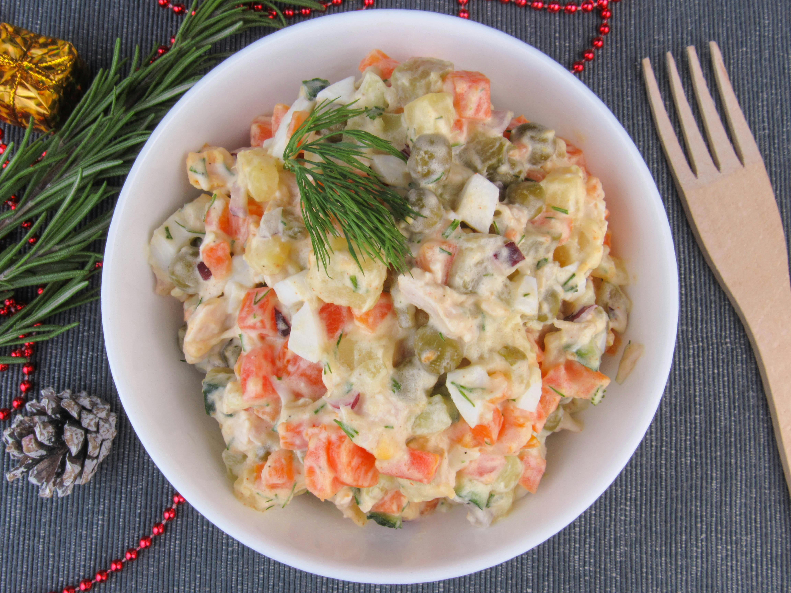

Home
Classic Potato Salad

Description
A classic potato salad that's easy to make with simple ingredients. Perfect for when you have guests over.
Ingredients
- Potatoes
- Eggs
- Celery
- Onion
- Relish
- Mayonnaise
- Mustard
- Seasonings
Steps
- Bring a large pot of salted water to a boil. Add potatoes and cook until tender but still firm.
- Drain, cool, peel, and chop potatoes. Set potatoes aside to cool.
- Place eggs in a saucepan and cover with cold water. Bring water to a boil, remove from heat and let stand for 10 minutes.
- Remove eggs from hot water. Cool, peel, and chop into chunks.
- Combine potatoes, eggs, celery, onion, relish, mayonnaise, mustard and seasonings in a large bowl. Mix together until well combined.
- Chill potato salad in the refrigerator before serving for best results.